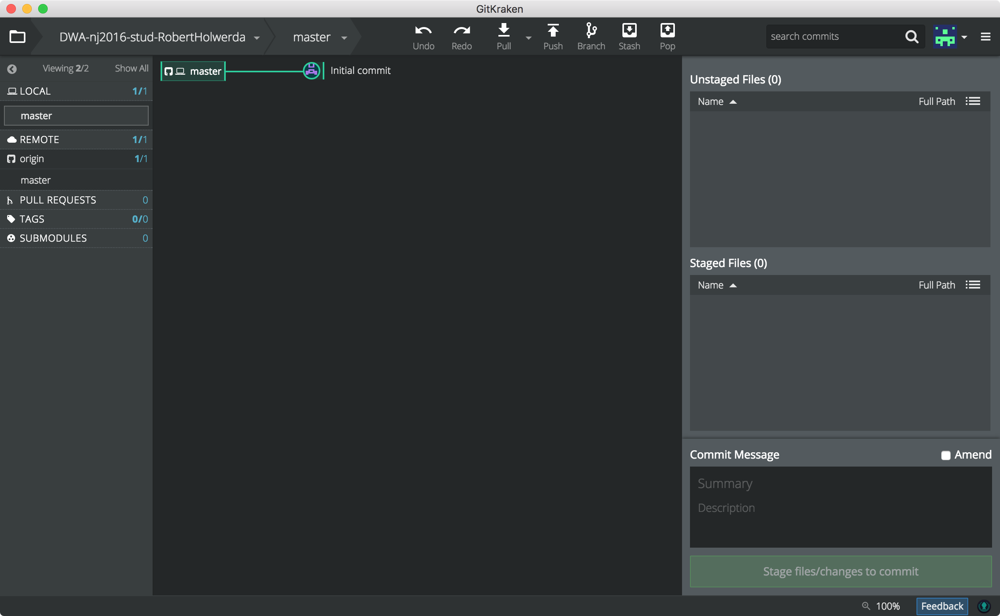
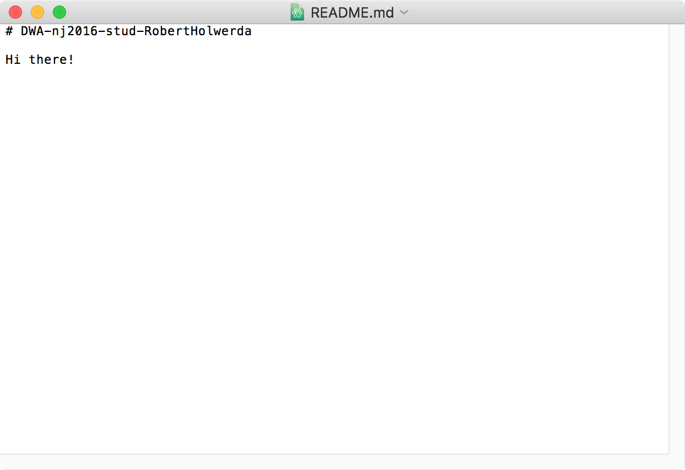
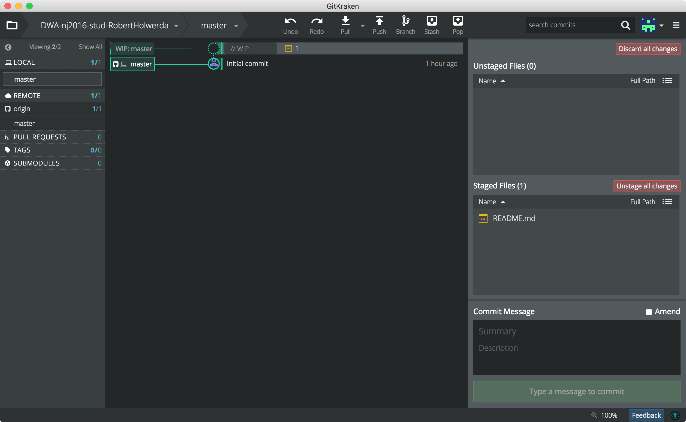
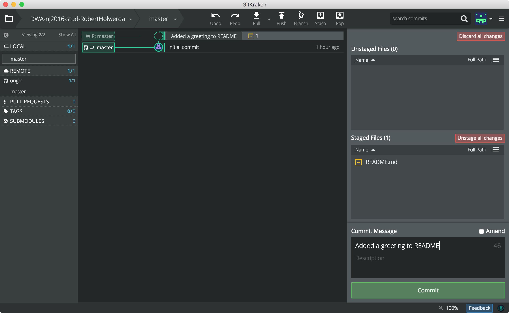
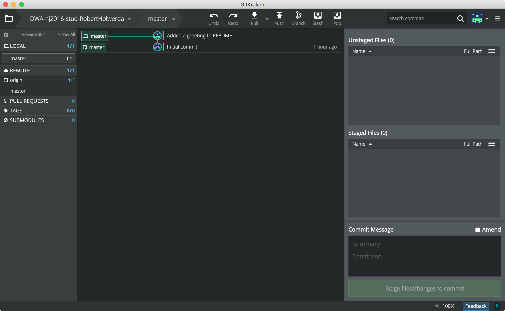

lab 2 Changing and committing a file
Goals
- - Learn how to check the status of the repository
- - See how GitKraken shows you tha a file has changed.
01See what an unchanged repo looks like
Look at the main screen for your repo. It should look like this:
This is Gt Kraken showing (in the middle column) that there is one commit called "Initial commit", and that there are no files that have been changed, added or deleted (in the right column).
Note: If things look different
If you've already looked at the contents of the directory, your OS may have added some files. In that case (or if you've been changing other things in the repo), your GitKraken main screen may look a bit like this:
(notice the two buttons on the right, and the "WIP" line at the top of the middle column).
In my case, OS X has added a file called ".DS_Store" (invisible in the finder, but visible to GitKraken). Windows does similar things. Sometimes, for example, it adds a file called "Thumbs.db".
If your repo, at this point in the tutorial, is not "clean", please use the red "Discard all Changes" button to revert your local repo to the "clean" state.
02Changing a file
Use your text editor to add a line to the file called "README.md" — something like this:
Now save, and switch back to GitKraken, and notice that Gitkraken has seen the change:
The file that has been changed is listed in the box on the right called "Unstaged Files". You also get the option to "Discard all changes" (this reverts the entire repo to the last commit, which in our situation is the version we got from GitHub.). Another button allows you to "Stage" files. Staging in Git means marking them as part of the next commit. We'll do that in a few steps.
Another note about the OS adding files
Your OS may have added an extra file (like ".DS-Store" or "Thumbs.db") again. You can ignore this annoying behaviour for now.
You can also ask GitKraken to ignore file like this, by adding their name to the file called ".gitignore" (each filename at the start of a new line).
02Making history: committing the file
Notice how GitKraken shows the top line in the middle column a bit grayed-out? The abbreviation "WIP" stands for Work-In-Progress. That represents the state of your local directory. These changes are not (yet) part of Git's database of all the versions of your code. First we need to create such a 'version', by creating a 'commit'.
On the bottom-right of the GitKraken window is a large green button that will create a commit. It is disabled for now because you can only commit if:
- - there are "staged" changes, and
- - there is some text in the commit-message
Step A: Staging
Move, with your mouse, over the "README.md" line in the box "Ustaged Files". You should see a small green button appear, allowing you to stage that particular file. Proceed, and stage this file. It moves to the box below.
Usually, you want to stage all changes for a single commit. Advanced Git users, however, want to be able to split a set of changes into several commits. That's why Git wants you to stage files: you can select which change go into this commit, and which ones into the next commit.
Step B: Adding a message
Fill out the Summary fields in the box below "Commit Message".
The Commit button should become enabled:
Step C: Commit!
Press the button to see a new commit in the middle column:
Notice that the boxes on the right are empty again: now, there aren't any differences between the files in your working directory, and the files in the latest commit anymore.
Also, the "WIP"-line in the middle column has changed: It is no longer grayed-out, and it shows the summary of your commit message (instead of "WIP"). The WIP-line only appears if there are differences between your working directory and the lastst commit.